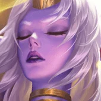

核心裝備
 和諧回音
和諧回音高頻 2 技可以快速累積並觸發群體續航，是 ARAM 最穩定的第一核心。
 熾灼魔器
熾灼魔器己方有射手或普攻核心時，頻繁治療能長時間維持攻速增益。
 流水之杖
流水之杖法師與技能型隊友能從治療後的增益中取得高收益。
 米凱的祝福
米凱的祝福敵方關鍵控制命中主力時可直接解控，避免索拉卡只能看著隊友被秒。
 蘇瑞亞的戰歌
蘇瑞亞的戰歌整隊追擊或撤退時提供主動加速，補足索拉卡自身缺乏位移的問題。

Soraka · 高頻治療／沉默反開型輔助
索拉卡最重要的是活著。先用 1 技命中敵人取得自我回復，再安全站在後排用 2 技補血；3 技不要只拿來消耗，應優先封住刺客、戰士進場或敵方法師的關鍵施法區。
本站評級理由：索拉卡在五人單線可以持續用 1 技自我回復，再用 2 技快速抬高隊友血線；3 技沉默區對強開與刺客非常致命，大絕也能直接救整隊，因此即使自身很脆仍有穩定 S 級團隊價值。
近期官方未列索拉卡標準 ARAM 專屬百分比修正；6.0b 曾調整 2 技技能冷卻為 7/6/5/4 秒，現行玩法依此技能組整理。
高頻 2 技可以快速累積並觸發群體續航，是 ARAM 最穩定的第一核心。
己方有射手或普攻核心時，頻繁治療能長時間維持攻速增益。
法師與技能型隊友能從治療後的增益中取得高收益。
敵方關鍵控制命中主力時可直接解控，避免索拉卡只能看著隊友被秒。
整隊追擊或撤退時提供主動加速，補足索拉卡自身缺乏位移的問題。

技能加速直接提高治療與沉默區的頻率。

升級三級鞋後讓技能與召喚師技能循環更快，保排更穩。

治療、護盾與 1 技消耗都能穩定觸發。

1 技緩速與 3 技控制命中後能幫隊伍補額外續航。

索拉卡常是優先擊殺目標，骨甲能減少被瞬間帶走的風險。

直接放大 2 技與大絕治療。
更多技能加速讓 2 技與 3 技更頻繁。

沒有位移，閃現是最重要的自保工具。

團戰中可額外抬高自己與隊友血線，讓你有更多時間繼續施放 2 技。
2 技 > 1 技 > 3 技
ARAM 開局三個基礎技能各點 1 級，之後主升 2 技、次升 1 技；大絕能點就點。
先以 1 技安全摸到敵人取得回復，再補隊友；不要為了補一個走太前的人把自己送進控制範圍。
和諧回音成形後團隊續航大幅提升。3 技應優先丟在敵方突進落點、鉤中目標周圍或己方後排腳下做反開。
後期你通常是敵方第一優先目標。保持最大安全距離，先活著再補人；大絕不要等全隊都殘血，能阻止第一個隊友被處決就很有價值。
 女妖面紗
女妖面紗可替換蘇瑞亞，讓自己更難被第一個技能抓死。
 死亡之帽
死亡之帽後期以高 AP 放大治療與 1 技回復。
 贖罪神石
贖罪神石可作替代，但 Howling Abyss 對同一目標後續贖罪治療有 60% 衰減，因此不列固定核心。
看遊戲卡片下方分類 → 點相同分類 → 看左側 S+／S／A。
二技能與大絕都是直接治療，幾乎所有復原增幅都能被索拉卡高頻利用。
高頻治療能連續觸發流水系列，把補血轉成更多加速、傷害與團隊續航。
一技能命中、二技能治療與三技能反開都非常依賴技能循環。
三技能沉默與定身能有效限制突進，控制類增幅能強化保排。
跑速能幫助索拉卡保持最安全的治療距離，避免自己先被切死。
長時間高頻施法需要資源支撐，魔力類雖卡少但能改善持續作戰。
7.2b ARAM S 第六批：索拉卡以高頻治療與沉默反開為核心，並避開 Howling Abyss 重複贖罪治療衰減造成的低效率。
ARAM 使用獨立於召喚峽谷的資料集；本站會把官方模式平衡、單線 5v5 特性與出裝／符文適配分開判斷，而不是直接複製峽谷配置。